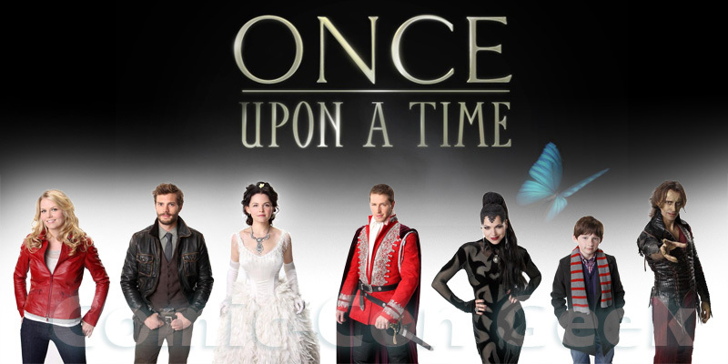

- Temporada 1
-
- A série começa com o Príncipe Encantado salvando a Branca de Neve da maldição do sono e, na cena seguinte, a Rainha Má interrompe o casamento dos dois, anunciando que ela planeja destruir a felicidade de todos lançando uma maldição sobre todos do reino, que os levará a um lugar onde só ela terá um "final feliz". A maioria dos personagens de contos de fadas são transportados para a cidade de Storybrooke, onde eles foram despojados de suas memórias e identidades reais, além do congelamento, onde todos fazem todo dia a mesma coisa sem um motivo claro. Em seu aniversário de 28 anos, Emma Swan é levada até Storybrooke por Henry Mills, seu filho que dera para a adoção ainda bebê, na esperança de quebrar a maldição lançada por Regina Mills (sua mãe adotiva), a prefeita da cidade.

- Temporada 2
-
- Apesar de Emma ter quebrado a maldição, nenhum dos personagens voltam para a Floresta Encantada, ficando com suas memórias reais. Agora, todos tem que lidar com suas próprias identidades duplas, e com a introdução da magia em Storybrooke, o que torna os destinos dos dois mundos interligados, o que traz novas ameaças. Somos apresentados a dois novos vilões, o Capitão Gancho e a mãe de Regina, Cora, também conhecida como Rainha de Copas. Dois agentes do nosso mundo também se infiltram em Storybrooke, com a missão de destruir a magia. Somos apresentados a Neal Cassidy / Baelfire, o pai biológico de Henry e filho de Rumplestiltskin.

- Temporada 3
-
- Os personagens tentam resgatar Henry das garras de Peter Pan na Terra do Nunca, que tem o plano de roubar o coração de Henry para colocar em si mesmo e se tornar imortal. A crescente luta de poder com Pan continua em Storybrooke, o que acaba resultando na reversão completa da maldição de origem. Todos os personagens são devolvidos para a Floresta Encantada, deixando Emma Swan e Henry para trás em Nova York com suas memórias apagadas. Mais tarde, os personagens são misteriosamente trazidos de volta para Storybrooke, mas tiveram suas memórias do ano anterior removidas, e a Bruxa Má do Oeste / Zelena, de Oz, aparece, planejando uma viagem no tempo para mudar seu passado. Então, mais uma vez, Emma é necessária para salvar a sua família. Conhecemos personagens marcantes em nossa infância, como Sininho, a família Darling e Peter Pan, além de outros personagens como Robin Hood e Roland. Princesa Isabel
- Temporada 4
-
- Eventos recentes trazem Elsa até Storybrooke, após a abertura da urna onde ela estava presa ser acidentalmente sugada para dentro do portal. Ao chegar a Storybrooke, Elsa procura por sua irmã Anna com a ajuda de vários personagens, mas em meio à busca acaba encontrando-se a mercê de um plano da Rainha da Neve. Enquanto isso, Regina procura o autor do livro Once Upon a Time de Henry, para que ele possa finalmente dar a ela seu final feliz. No entanto, Gold, com a ajuda de Cruella De Vil, Malévola e Úrsula, tem seus próprios planos para reescreverem as regras que regem os destinos dos heróis e vilões.no final eles conseguem encontrar Ana. Finalmente malévola consegue encontrar sua filha, e descobre que Emma já foi amiga dela mas a abandonou quando criança.
- Temporada 5
-
- Os personagens embarcam em uma missão para Camelot tentando encontrar Merlin, a fim de libertar Emma dos poderes das trevas. Para complicar a situação, o Rei Artur está determinado a alterar o equilíbrio entre a luz e as trevas usando a lendária espada Excalibur. Quando a história e o destino se colidem, consequências inusitadas levam os personagens para o Submundo à procura de salvar a alma perdida de um amigo, onde encontram também as almas daqueles com negócios inacabados e enfrentam um novo vilão, Hades, que pretende prender os heróis em seu domínio para sempre. Reencontramos alguns personagens antigos, como Peter Pan, Cora, Liam Jones, Neal Cassidy, Cruella, James, Mulan, Ruby, Dorothy, e muitos outros.

- Temporada 6
-
- A cidade de Storybrooke está ameaçada pelo alter-ego agora dividido do Dr. Jekyll, o Sr. Hyde, que junto com seus companheiros da Terra das Histórias Não Contadas, lutarão para derrubar os heróis. Após sua falha tentativa de se livrar de seu lado mal, Regina terá de lidar também com a sua auto personificação, a Rainha Má, que foi separada de si e deseja vingança contra os heróis.

- Temporada 7
-
- Em maio de 2017, a série foi renovada para uma sétima temporada contendo 22 episódios, marcando o início de uma reinicialização. A temporada se passa anos depois, em Seattle, Washington, onde Lucy chega com seu livro de contos de fadas para encontrar seu pai, Henry Mills, cuja família está precisando de sua ajuda.Em fevereiro de 2018, foi anunciado que a sétima temporada seria a última temporada da série.